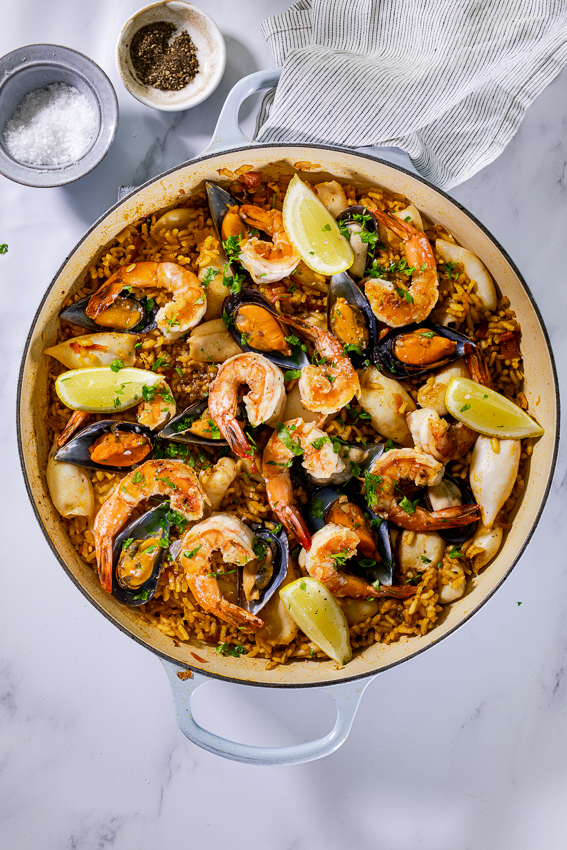

Seafood Paella

Seafood Paella for an extravagant ocean experience!
Ingredients
- Prawns/Shrimp: If using frozen, thaw before cooking then peel and devein.
- Mussels: I used half-shell mussels. If using fresh mussels, tap gently on the kitchen counter. If they close, they are fresh, if they don't, discard them. Similarly, if the mussels don't open once cooked, discard them.
- Calamari: I used calamari tubes but squid tentacles or calamari rings will also work.
- Other seafood options: Clams and chunks of white fish will also work.
- Paella Rice: I used Arborio rice but Spanish Bomba is more traditional. Any short-grain rice will work.
- Onion
- Garlic
- Smoked paprika
- Chopped tomatoes: You could use other vegetables like red pepper and peas too.
- Chicken/Fish stock: Seafood broth can also be used.
- Salt and black pepper
- Lemon Wedges
- Parsley
Method
- Prepare the seafood: Peel and devein the prawns/shrimp then pat the shrimp and calamari dry with paper towels. Place a large, deep pan (approximately 11-12inches/30cm) over medium high heat. Drizzle the calamari and shrimp with olive oil and season with salt then sear in the hot pan until a little color develops but the seafood isn't cooked fully yet. It's important to dry the seafood well as this will help them brown in the hot pan. This step is also optional but I prefer searing the seafood first to ensure they don't release too much moisture into the paella. Remove the seafood from the pan and set aside.
- Start the Paella: In the same pan, heat the olive oil. Add the onion and garlic and cook until translucent and fragrant. Pour in the tomatoes and cook for a few minutes until most of the liquid has evaporated. Add the rice and smoked paprika and stir to combine. Season with salt and pepper.
- Cook: Pour in the stock then reduce the heat, partially cover and allow to simmer for 7 minute or until most of the liquid has been absorbed and the rice is almost cooked. Add the squid, calamari and shrimp, tucking it into the rice. Try not to disturb the bottom layer of rice. Cover again then cook for another 5-7 minutes until the seafood and rice are fully cooked.
- Serve: Season to taste and serve with lemon wedges and chopped parsley.